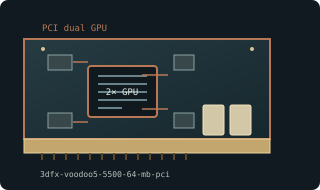

[ DUAL-GPU GRAPHICS CARDS // IDENTIFIED COMPONENT ]
3dfx Voodoo5 5500 64 MB PCI
Dual VSA-100 / Voodoo5, 2000. This entry identifies one model or reference configuration; related products and OEM variants are distinguished below.

MODEL / VARIANT: Separate AGP and PCI versions exist. 64 MB is divided between the two processors; Voodoo5 6000 is a different prototype/product and not the same card.
Recorded specifications
| Cataloged product | 3dfx Voodoo5 5500 64 MB PCI |
|---|---|
| Generation / core | Dual VSA-100 / Voodoo5, 2000 |
| Core & memory | Two VSA-100 chips; 64 MB SDRAM aggregate (32 MB per chip); 166 MHz core/memory reference; single-card SLI architecture. |
| Host interface & I/O | 32-bit PCI card; VGA output; external power connector on common PCI board; large dual-fan heatsink assembly. |
| Variant boundary | Separate AGP and PCI versions exist. 64 MB is divided between the two processors; Voodoo5 6000 is a different prototype/product and not the same card. |
| Archival identification | Record full part number, PCB or module revision, BIOS/firmware, device/subsystem IDs, driver version, adapters, physical condition and source-document edition. |
Compatibility, service & archival notes
PCI model is distinct from AGP Voodoo5 5500; memory is duplicated per rendering GPU rather than pooled.
Inspect both fans, power connector and PCB interconnects; preserve VBIOS and Glide driver. Check substantial card length/adjacent slot obstruction and PSU wiring.
- Check signaling, slot keying, lane width, power pinout, board/module dimensions, case clearance, airflow and PSU requirements for the exact specimen.
- Use drivers supporting its device ID and target OS. Preserve original installer and firmware copies, and record their versions before changes.
- Do not energize boards with corrosion, cracks, damaged connectors, obstructed cooling or suspected shorts; document condition before bench testing.
Manufacturer, model & standards sources
- 3dfx Voodoo5 product historyModel/product-history reference; compare the exact card revision and nameplate.
- 3dfx product documentation archiveManufacturer or archived product/driver documentation; exact OEM board details may differ.
- PCI Express interface standardHost interface reference; confirm exact physical and electrical compatibility.
Reference specifications do not supersede the board vendor's manual or nameplate. Performance figures are vendor claims unless explicitly identified as measured.